<title>One Door for People</title>
<link rel="preconnect" href="https://fonts.googleapis.com">
<link rel="stylesheet" href="https://fonts.googleapis.com/css2?family=Inter+Tight:wght@400;600;700&display=swap">
<style>
  /* One visual world on purpose: the app's own dark palette (scheduler.css), so the pictures sit in their own light. */
  :root {
    color-scheme: dark;
    --bg: #0b0d10; --panel: #15181d; --panel-2: #1b1f26; --ink: #e8edf2; --ink-2: #aeb8c3; --ink-3: #7d8894;
    --edge: #262b33; --accent: #3cc6e6; --warn: #f0c36d; --ok: #57c97a; --hard: #f0555f; --grey: #5d6772;
  }
  body { background: var(--bg); color: var(--ink); font: 15px/1.55 'Inter Tight', system-ui, -apple-system, 'Segoe UI', sans-serif; }
  main { max-width: 1120px; margin: 0 auto; padding-inline: 16px; padding-block: 28px 56px; display: grid; gap: 22px; }
  header h1 { font-size: 26px; line-height: 1.2; margin: 0 0 6px; text-wrap: balance; letter-spacing: -.01em; }
  header p { color: var(--ink-2); margin: 0; max-width: 72ch; }
  header p b { color: var(--ink); }
  .legend { display: flex; flex-wrap: wrap; gap: 8px 16px; margin-top: 12px; color: var(--ink-2); font-size: 13px; }
  .legend span { display: inline-flex; align-items: center; gap: 6px; }
  section { background: var(--panel); border: 1px solid var(--edge); border-radius: 12px; padding: 18px; display: grid; gap: 12px; }
  .head { display: flex; flex-wrap: wrap; align-items: baseline; gap: 6px 12px; }
  h2 { font-size: 17px; margin: 0; text-wrap: balance; }
  .rul { font: 600 11px/1 'Inter Tight', system-ui, sans-serif; letter-spacing: .06em; text-transform: uppercase; color: var(--ink-3); }
  section > p { margin: 0; color: var(--ink-2); max-width: 78ch; }
  section > p b { color: var(--ink); }
  .pics { display: flex; flex-wrap: wrap; gap: 14px; align-items: flex-start; }
  figure { margin: 0; display: grid; gap: 6px; min-width: 0; }
  figure.wide { flex: 1 1 560px; }
  figure.mid { flex: 1 1 340px; max-width: 620px; }
  figure.phone { flex: 0 1 260px; }
  figure img { display: block; width: 100%; height: auto; border: 1px solid var(--edge); border-radius: 8px; background: #000; }
  figcaption { color: var(--ink-3); font-size: 13px; }
  .tag { font: 600 11px/1.4 'Inter Tight', system-ui, sans-serif; letter-spacing: .05em; text-transform: uppercase; padding: 1px 6px; border-radius: 4px; color: #0b0d10; }
  figcaption .tag { margin-right: 6px; }
  .real { background: var(--accent); }
  .drawn { background: var(--warn); }
  .tablewrap { overflow-x: auto; }
  table.what { border-collapse: collapse; width: 100%; font-size: 14px; }
  table.what th, table.what td { text-align: left; padding: 8px 10px; border-bottom: 1px solid var(--edge); vertical-align: middle; }
  table.what th { color: var(--ink-3); font-weight: 600; font-size: 12px; letter-spacing: .05em; text-transform: uppercase; white-space: nowrap; }
  table.what td { color: var(--ink-2); }
  table.what td:first-child { color: var(--ink); font-weight: 600; white-space: nowrap; }
  table.what td.c { text-align: center; }
  i.dot { display: inline-block; width: 10px; height: 10px; border-radius: 50%; vertical-align: middle; }
  i.g { background: var(--ok); } i.r { background: var(--hard); } i.n { background: var(--grey); }
  ol.asks { margin: 0; padding-left: 22px; display: grid; gap: 12px; max-width: 82ch; color: var(--ink-2); }
  ol.asks b { color: var(--ink); }
  ol.asks .rec { display: block; color: var(--ink-3); font-size: 13.5px; margin-top: 2px; }
  ol.asks .rec b { color: var(--accent); font-weight: 600; }
  ul.calls { margin: 0; padding-left: 20px; display: grid; gap: 6px; color: var(--ink-2); max-width: 82ch; }
  ul.calls b { color: var(--ink); }
</style>

<main>
  <header>
    <h1>One door: Admin → Users</h1>
    <p>Every person, one row. Two dots say whether he <b>can sign in</b> and whether he is <b>on the roster</b>; tap his
      row for what you can do. Quals keeps quals, CAT, flight and initials. <b>Approved 27 Sep 26 (D322)</b> — question 1
      answered A (D320), the rest as recommended (D321). Not built yet (D309, D310, with D308 and D305).</p>
    <div class="legend">
      <span><span class="tag real">real</span> the app today</span>
      <span><span class="tag drawn">drawn</span> the new piece</span>
      <span><i class="dot g"></i> on</span><span><i class="dot r"></i> off</span><span><i class="dot n"></i> none</span>
    </div>
  </header>

  <section>
    <div class="head"><h2>What each row offers</h2><span class="rul">D309 · D310</span></div>
    <div class="tablewrap">
      <table class="what">
        <tr><th>He is</th><th>Sign-in</th><th>Roster</th><th>Tap his row</th></tr>
        <tr><td>Active</td><td class="c"><i class="dot g"></i></td><td class="c"><i class="dot g"></i></td><td>Suspend · Archive · Delete</td></tr>
        <tr><td>Suspended</td><td class="c"><i class="dot r"></i></td><td class="c"><i class="dot g"></i></td><td>Enable · Archive · Delete</td></tr>
        <tr><td>No sign-in</td><td class="c"><i class="dot n"></i></td><td class="c"><i class="dot g"></i></td><td>Give sign-in · Archive · Delete</td></tr>
        <tr><td>Archived</td><td class="c"><i class="dot r"></i> or <i class="dot n"></i></td><td class="c"><i class="dot r"></i></td><td>Restore · Delete</td></tr>
        <tr><td>Waiting</td><td class="c">—</td><td class="c">—</td><td>Give access · Refuse</td></tr>
      </table>
    </div>
    <p>Archive also suspends his sign-in; Restore brings both back. Your own row can't be opened.</p>
  </section>

  <section>
    <div class="head"><h2>1 · The list</h2><span class="rul">D309 · D310</span></div>
    <p>Waiting at the top, then everyone on the roster, then <b>▸ Archived · N</b> folded at the foot. The box finds a
      callsign or sign-in (the demo has 59 people — <a href="img/one-door/desktop-1-people.png" style="color:var(--accent)">the whole list</a>). A posting
      waiting for its date shows on his row.</p>
    <div class="pics">
      <figure class="mid">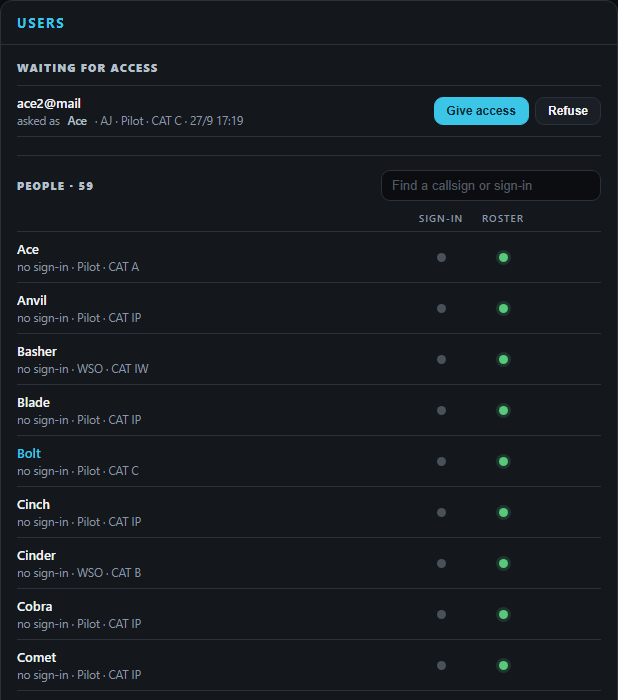<figcaption><span class="tag real">real</span>the request · <span class="tag drawn">drawn</span>the list</figcaption></figure>
      <figure class="mid">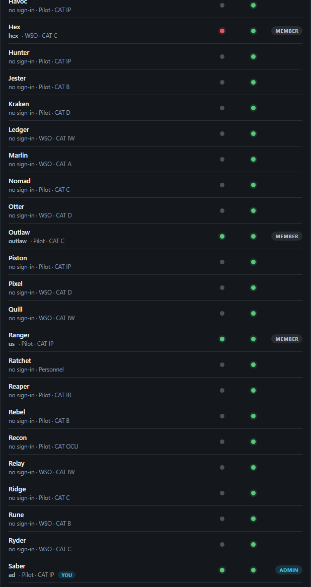<figcaption><span class="tag drawn">drawn</span>Hex suspended (red); Outlaw, Ranger can sign in; you</figcaption></figure>
      <figure class="mid">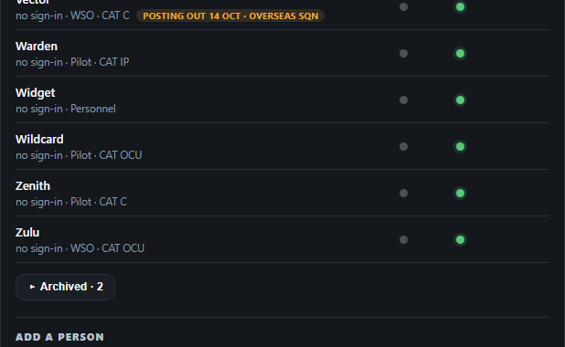<figcaption><span class="tag drawn">drawn</span>a posting waiting · Archived folded</figcaption></figure>
      <figure class="phone">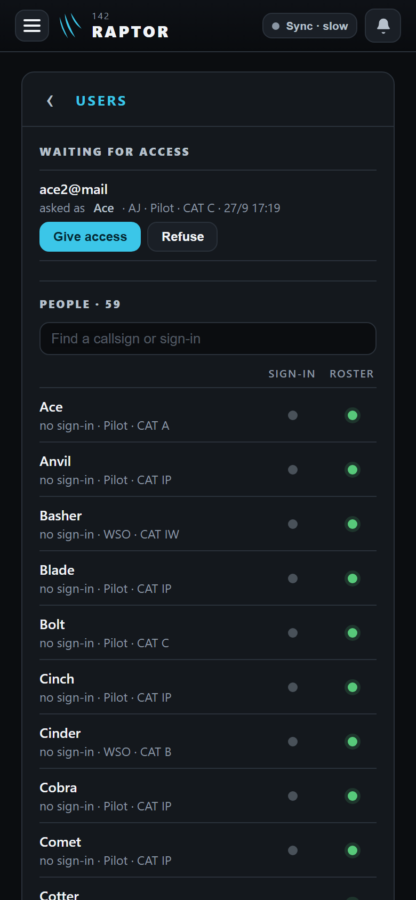<figcaption><span class="tag drawn">drawn</span>phone</figcaption></figure>
      <figure class="phone">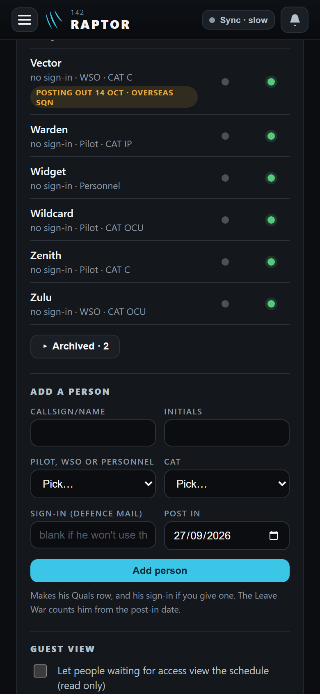<figcaption><span class="tag drawn">drawn</span>phone, the foot</figcaption></figure>
    </div>
  </section>

  <section>
    <div class="head"><h2>2 · Tap his row</h2><span class="rul">D285 · D298 · D310</span></div>
    <p>His sign-in and role, then the buttons for his state. Delete asks twice and says what goes, as today.</p>
    <div class="pics">
      <figure class="mid">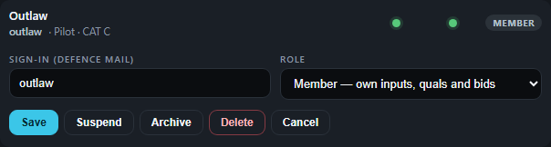<figcaption><span class="tag drawn">drawn</span>active</figcaption></figure>
      <figure class="mid">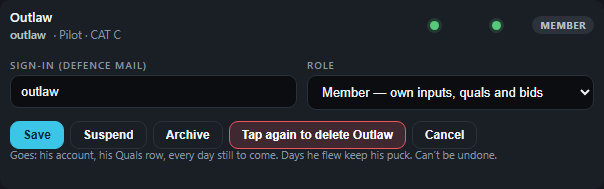<figcaption><span class="tag drawn">drawn</span>Delete, second tap</figcaption></figure>
      <figure class="mid">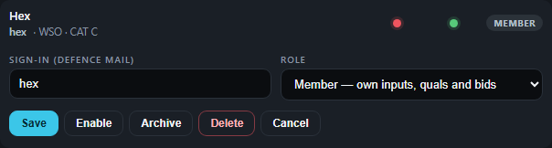<figcaption><span class="tag drawn">drawn</span>suspended</figcaption></figure>
      <figure class="mid">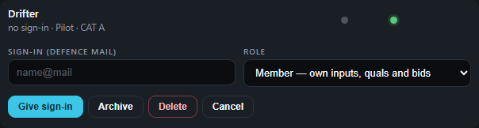<figcaption><span class="tag drawn">drawn</span>no sign-in</figcaption></figure>
      <figure class="phone">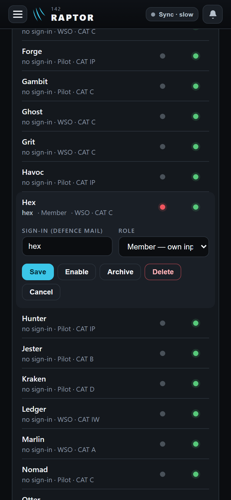<figcaption><span class="tag drawn">drawn</span>phone</figcaption></figure>
    </div>
  </section>

  <section>
    <div class="head"><h2>3 · Archived: Restore asks his post-in date</h2><span class="rul">D295 · D308 · D310</span></div>
    <p>Restore puts him back on the roster and lets him sign in, in one tap. The date opens on today; change it if he
      arrives later. His callsign box renames him; if a man on the roster has his callsign, Restore asks for another.</p>
    <div class="pics">
      <figure class="mid">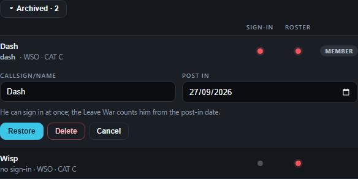<figcaption><span class="tag drawn">drawn</span>Restore</figcaption></figure>
      <figure class="mid">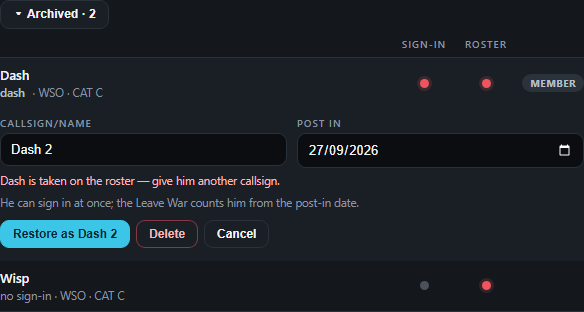<figcaption><span class="tag drawn">drawn</span>his callsign is taken</figcaption></figure>
    </div>
  </section>

  <section>
    <div class="head"><h2>4 · Waiting: Give access</h2><span class="rul">D214 · D308 · D309</span></div>
    <p>"Approve / Decline" read <b>Give access / Refuse</b>. New person asks the post-in date too.</p>
    <div class="pics">
      <figure class="mid">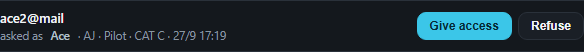<figcaption><span class="tag real">real</span>the request · <span class="tag drawn">drawn</span>the words</figcaption></figure>
      <figure class="mid">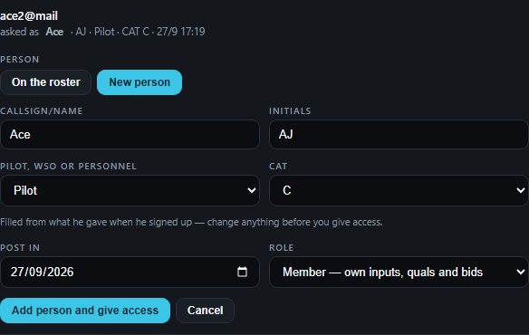<figcaption><span class="tag real">real</span>the form · <span class="tag drawn">drawn</span>Post in</figcaption></figure>
    </div>
  </section>

  <section>
    <div class="head"><h2>5 · Add a person</h2><span class="rul">D217 · D224 · D308</span></div>
    <p>New person only: a man already on the roster gets his sign-in on his own row. Role appears once you type a
      sign-in, as today.</p>
    <div class="pics">
      <figure class="mid">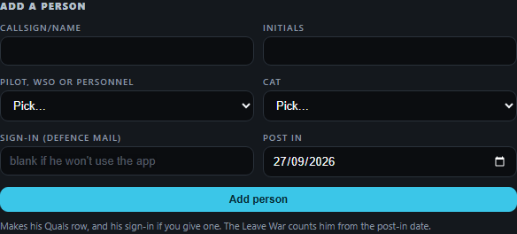<figcaption><span class="tag drawn">drawn</span>with Post in</figcaption></figure>
    </div>
  </section>

  <section>
    <div class="head"><h2>6 · His first sign-in after Restore</h2><span class="rul">D305</span></div>
    <p>It changes nothing. <b>Check my quals</b> opens his own Quals row, which he can edit (D149).</p>
    <div class="pics">
      <figure class="wide">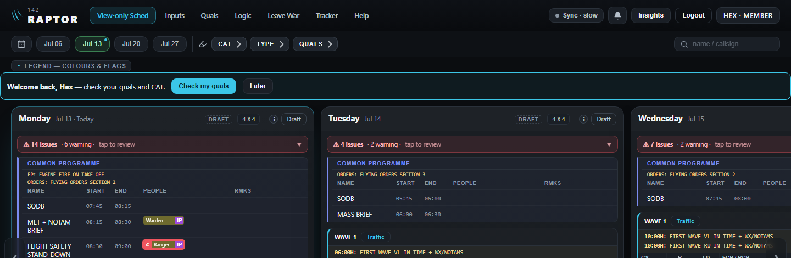<figcaption><span class="tag drawn">drawn</span>desktop</figcaption></figure>
      <figure class="phone">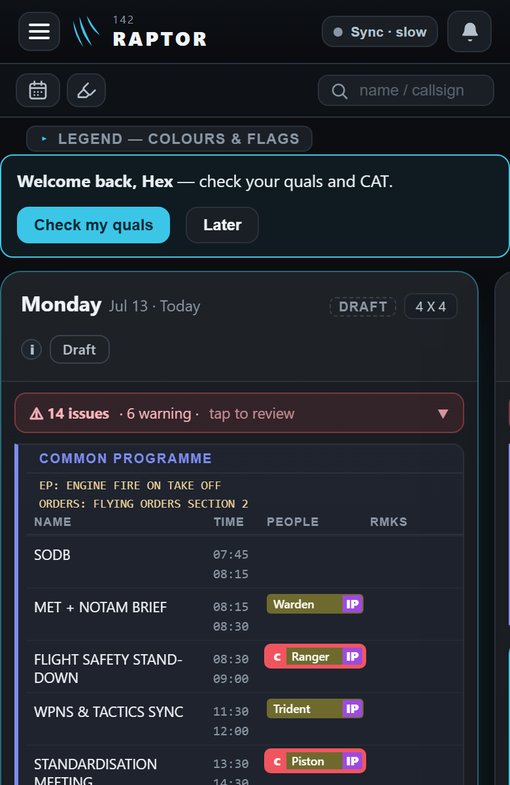<figcaption><span class="tag drawn">drawn</span>phone</figcaption></figure>
    </div>
  </section>

  <section>
    <div class="head"><h2>7 · Quals</h2><span class="rul">D310</span></div>
    <p>No ✕ in edit mode, no Archived list. <b>+ Add person</b> still brings you here.</p>
    <div class="pics">
      <figure class="mid">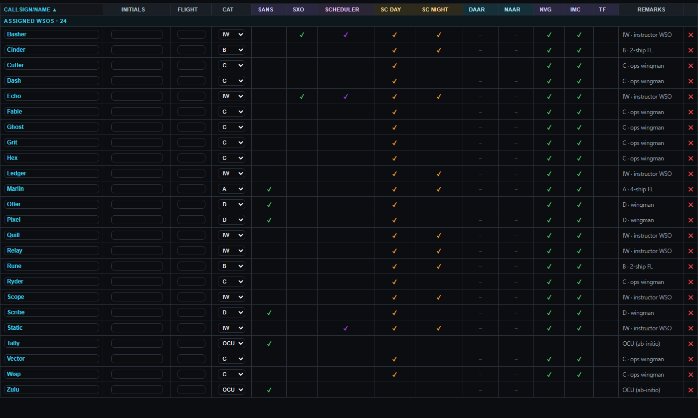<figcaption><span class="tag real">real</span>today</figcaption></figure>
      <figure class="mid">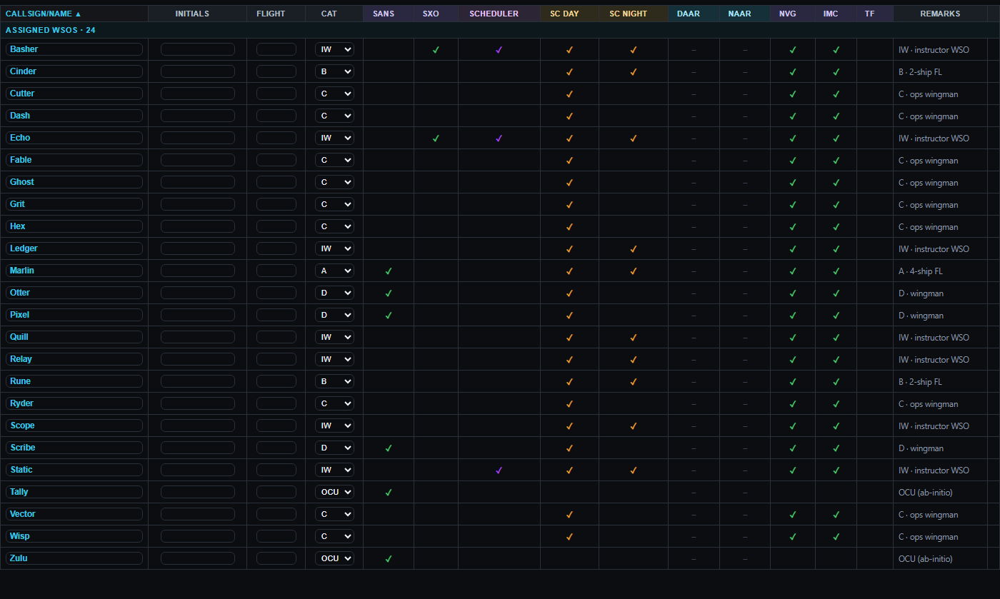<figcaption><span class="tag drawn">drawn</span>after</figcaption></figure>
    </div>
  </section>

  <section id="away">
    <div class="head"><h2>8 · Question 1: the months he was away</h2><span class="rul">D308</span></div>
    <p>A leave period shows a man's row only while he is in the squadron for some of it. Your example: Hex posted out
      14 Oct, back 1 Mar; leave periods Oct, Nov–Dec and Jan–Apr.</p>
    <div class="tablewrap">
      <table class="what">
        <tr><th>Leave period</th><th>A · the war keeps each stint (recommended)</th><th>B · one post-in date only</th></tr>
        <tr><td>1–31 Oct</td><td>His row: 1–13 Oct as normal, 14–31 Oct "PO"</td><td>No row. If he had leave there, the row shows with every day "not here"</td></tr>
        <tr><td>1 Nov–31 Dec</td><td>No row: away the whole period</td><td>No row</td></tr>
        <tr><td>1 Jan–30 Apr</td><td>His row: Jan–Feb "away", counted from 1 Mar</td><td>His row: Jan–Feb "not here", counted from 1 Mar</td></tr>
      </table>
    </div>
    <p>So the second period shows no row either way. The difference is his October. The pictures below use the demo's
      one year instead: posted out 15 Jun, back 1 Sep, his leave in April and October.</p>
    <div class="pics">
      <figure class="mid">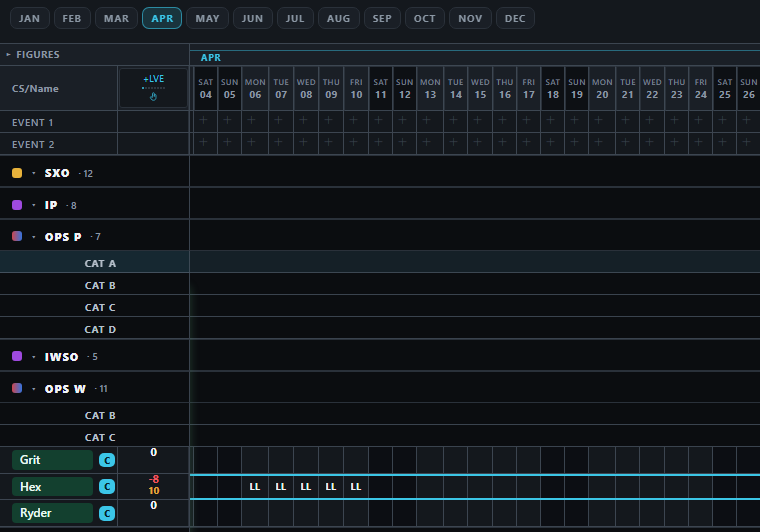<figcaption><span class="tag real">real</span>A · April, before he left</figcaption></figure>
      <figure class="mid">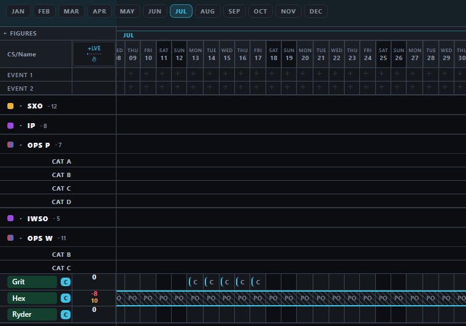<figcaption><span class="tag real">real</span>A · July, away</figcaption></figure>
      <figure class="mid">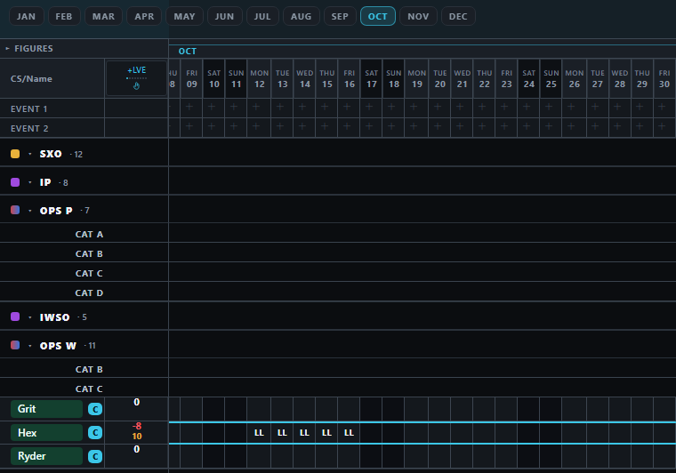<figcaption><span class="tag drawn">drawn</span>A · October, back</figcaption></figure>
      <figure class="mid">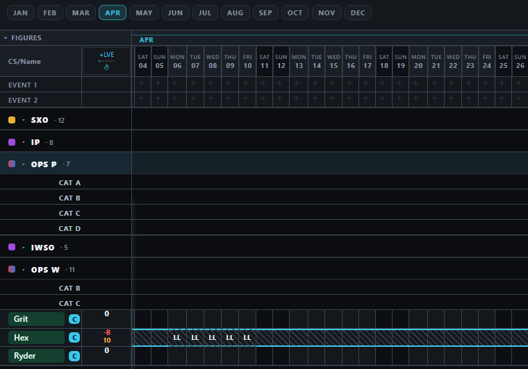<figcaption><span class="tag real">real</span>B · April reads "not here"</figcaption></figure>
      <figure class="mid">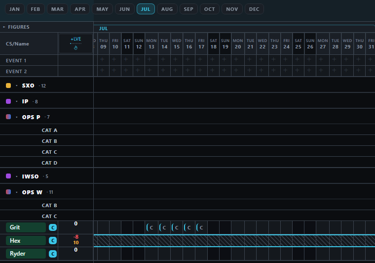<figcaption><span class="tag real">real</span>B · July, not here</figcaption></figure>
      <figure class="mid">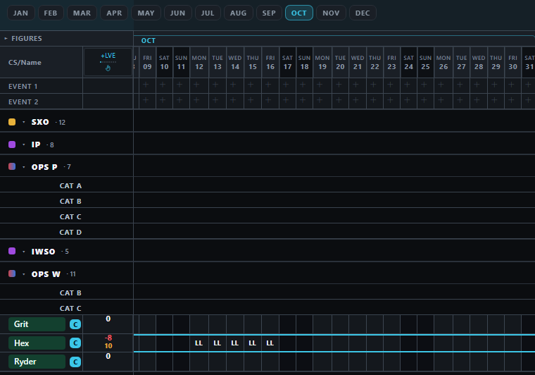<figcaption><span class="tag real">real</span>B · October, back</figcaption></figure>
    </div>
  </section>

  <section>
    <div class="head"><h2>Your questions</h2><span class="rul">[POST-OUT-ASKS] and one new</span></div>
    <ol class="asks">
      <li><b>The months he was away.</b> Hex posted out 14 Oct, restored with a post-in date of 1 Mar. On the Leave War,
        should Oct–Feb read "away" (not counted, no bids) while his months before October stay as they were?
        <span class="rec"><b>Recommended: yes.</b> Today the Leave War keeps only one in-date and one out-date per man,
        so it has to keep several. About half a day more; the other way, his months before October would read "not here" too.
        <a href="#away" style="color:var(--accent)">Pictures in 8.</a></span></li>
      <li><b>SANS on his posting date</b> moves his whole Leave War row into the SANS group, earlier months included.
        <span class="rec"><b>Recommended: keep.</b> The Leave War draws a man in one group.</span></li>
      <li><b>Archiving a man</b> makes the published days he is on read "1 pending" until the next amendment.
        <span class="rec"><b>Recommended: keep.</b> Nothing on a published day changes without the scheduler seeing it (D45).</span></li>
      <li><b>A posting out is not a step of the Undo button</b>; "Undo post out" on the Leave War takes it back.
        <span class="rec"><b>Recommended: keep.</b></span></li>
      <li><b>An admin may still add leave or OIL on a deleted man's past days.</b>
        <span class="rec"><b>Recommended: allow.</b> The past keeps his record (D299).</span></li>
      <li><b>A Delete on an archived man with no account</b> (the look card's 2): this design gives every archived row
        Delete, so approving it answers this one.</li>
    </ol>
  </section>

  <section>
    <div class="head"><h2>What I decided</h2><span class="rul">say if any is wrong</span></div>
    <ul class="calls">
      <li><b>Archive is one tap</b>, with a message saying what it did; Restore undoes it.</li>
      <li><b>Restore turns his sign-in back on</b> even if you had suspended it before archiving him (D310: both back).</li>
      <li><b>Enable is gone from archived rows</b>, so a man can't sign in while archived.</li>
      <li><b>Renaming a man on the roster stays on Quals</b>; only an archived man is renamed here.</li>
      <li><b>The list is A to Z</b>, with a search box; nothing reorders itself.</li>
    </ul>
  </section>
</main>
